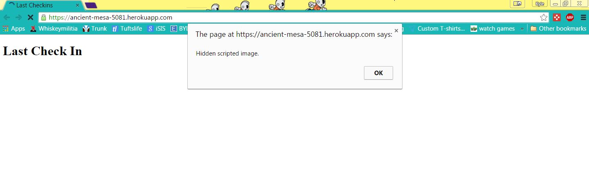
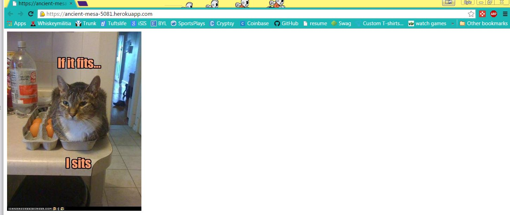

Security Assessment of Marauders map
Prepared by Kyle Slinger 4/22/15
Introduction
This assessment tests the security of Marauders Map
web application created by Sam Broner for Comp20 assignment 5. Marauders Map is
is a web application that takes in a user's
longitude and latitude placement and plots them on a map when they log in. The user can then see where all the other users have logged in and how far away they are from the user. Although this application runs smoothly when operated correctly, there are many vulnerabilities in the application where false information could be supplied or data taken from the site.
The purpose of this assessment is to show where attacks could be made on this particular application.
Methodology
Testing was done without looking into any of the source code. This was to simulate the conditions of a normal attacker. Only to components that they viewed were looked at.
Abstract of findings
Like most unsecure websites all the attacks that can be done on this website come from the user input. The site does not parse through any of the user input before it is logged on to the database or the site so almost anything can be written.
Issues Found
- Cross Site Scripting
-
Severity of issue: High Users can input code or script to make peform malicious attacks
-
Data that goes through the POST API is not filtered in any way before it is sent to the database. The user may enter any data they choose. This could include JavaScript or HTML code that could cause unwanted results. For example running a login with <script>function a() { document.write("<<img src='http://i0.kym-cdn.com/entries/icons/original/000/009/266/funny-pictures-if-it-fits-i-sits.jpg'>lt;/img>"); }; window.onload = a; alert("Hidden scripted image.");<script> Will inject a alert that says the site is XSS and the redirect to a picture of a cat sitting in a milk carton.

-
In order to fix this problem the user input must be filtered before it is stored in the database or displayed on the application.Do not trust user input! Any text that could be HTML or JavaScript must be stripped down. This can be done by removing the > tags and replacing them with <
- Modifying any user data
-
Severity of issue: low Anyone can update any users location
-
With a posting application any of the locations associated with the logins can be modified. Anyone can submit that login and change the data any way they please. An example would be changing everyones location to the same place.
-
In order to fix this problem the user input must be filtered before it is stored in the database or displayed on the application.Do not trust user input! Any text that could be HTML or JavaScript must be stripped down. This can be done by removing the > tags and replacing them with <
Conclusion
stuff